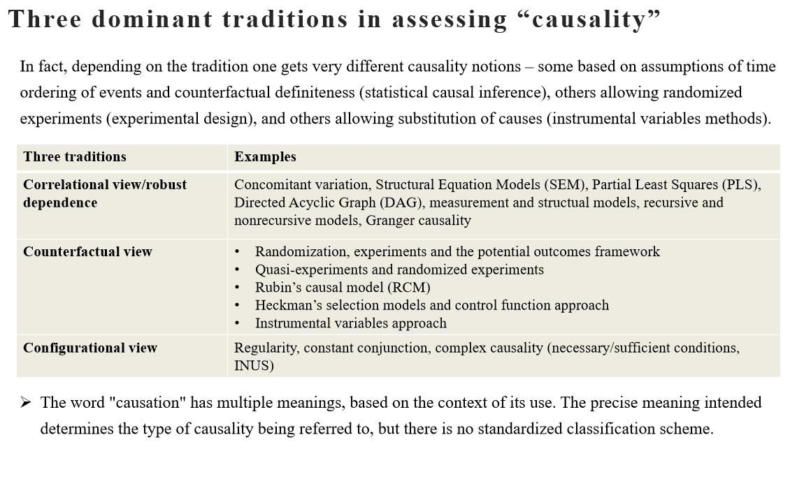
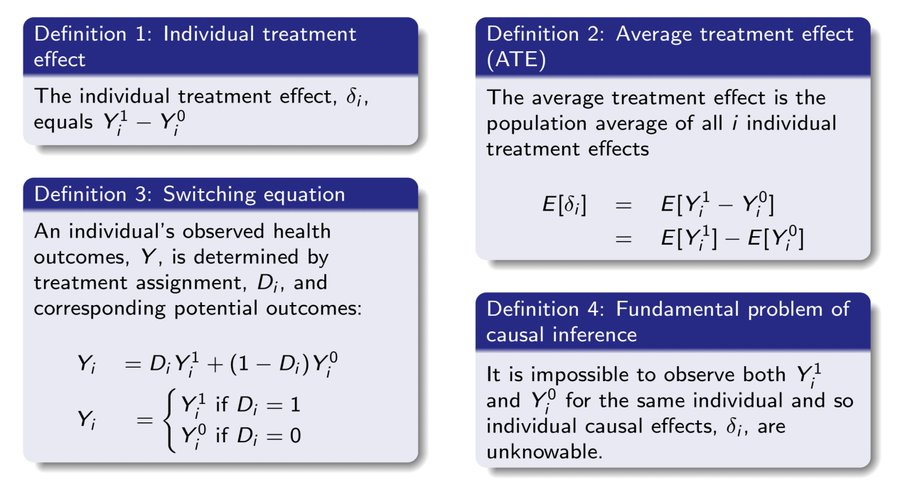
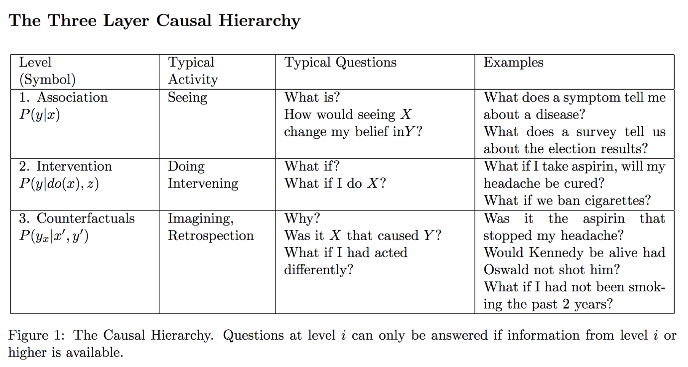
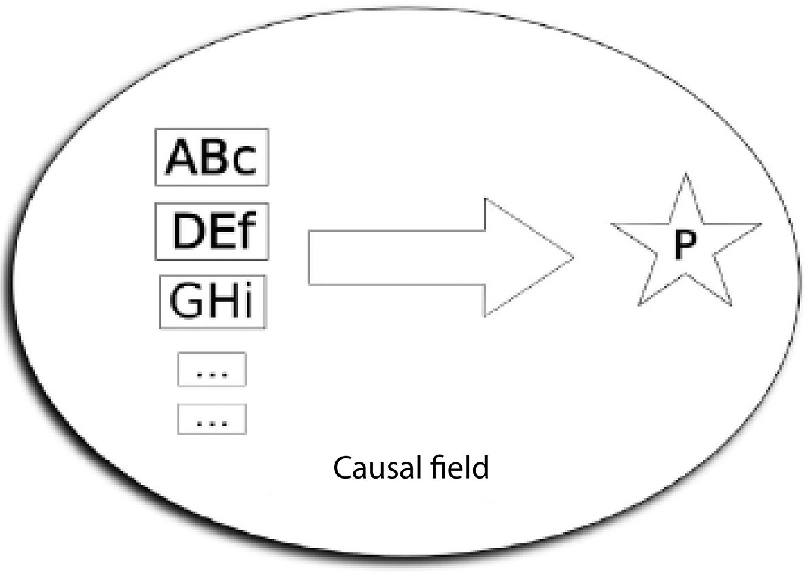
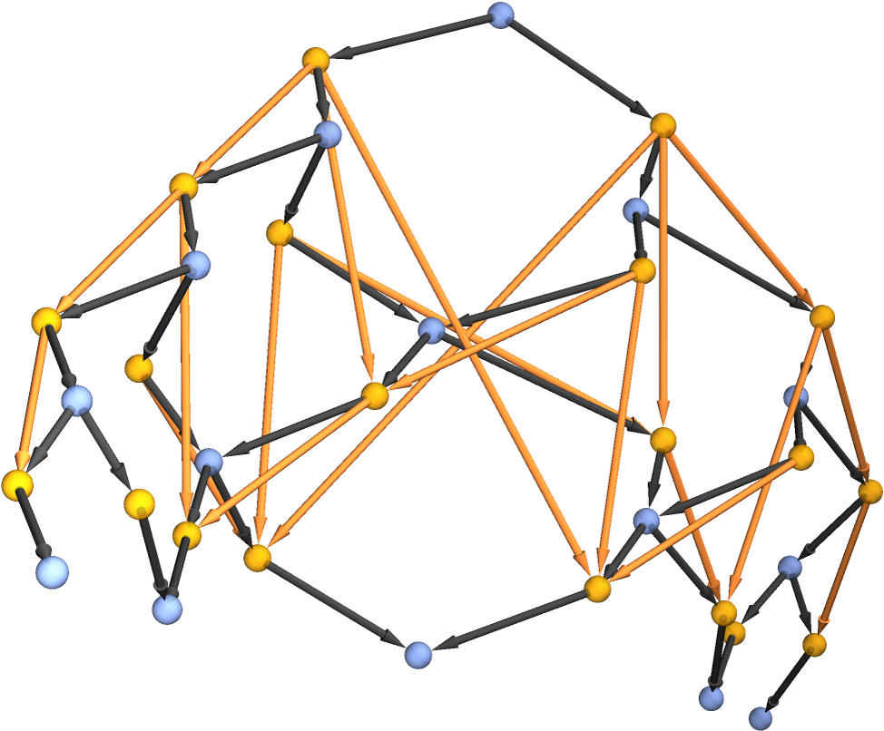

<title>Some Thoughts on Causation</title>
<style>
      /* Scoped styles for Blogger dark themes. No white table backgrounds. */
      .ep-post {
        color: inherit;
        background: transparent;
        font-family:
          system-ui,
          -apple-system,
          BlinkMacSystemFont,
          "Segoe UI",
          Roboto,
          Helvetica,
          Arial,
          sans-serif;
        line-height: 1.65;
        font-size: 1rem;
        max-width: 980px;
        margin: 0 auto;
      }

      .ep-post * {
        box-sizing: border-box;
      }

      .ep-post h1,
      .ep-post h2,
      .ep-post h3,
      .ep-post h4 {
        line-height: 1.25;
        margin: 1.8em 0 0.65em;
        color: inherit;
      }

      .ep-post h1 {
        font-size: 2rem;
        border-bottom: 1px solid
          color-mix(in srgb, currentColor 24%, transparent);
        padding-bottom: 0.35em;
      }

      .ep-post h2 {
        font-size: 1.45rem;
        border-bottom: 1px solid
          color-mix(in srgb, currentColor 16%, transparent);
        padding-bottom: 0.25em;
      }

      .ep-post h3 {
        font-size: 1.15rem;
      }

      .ep-post p {
        margin: 0.75em 0;
      }

      .ep-post ul,
      .ep-post ol {
        margin: 0.65em 0 0.9em 1.35em;
        padding: 0;
      }

      .ep-post li {
        margin: 0.22em 0;
      }

      .ep-post a {
        color: inherit;
        text-decoration: underline;
        text-underline-offset: 0.16em;
      }

      .ep-post strong {
        font-weight: 700;
      }

      .ep-post code {
        background: color-mix(in srgb, currentColor 10%, transparent);
        color: inherit;
        border: 1px solid color-mix(in srgb, currentColor 16%, transparent);
        border-radius: 0.25rem;
        padding: 0.08em 0.28em;
        font-family:
          ui-monospace, SFMono-Regular, Menlo, Consolas, "Liberation Mono",
          monospace;
        font-size: 0.92em;
      }

      .ep-post pre {
        background: color-mix(in srgb, currentColor 7%, transparent);
        color: inherit;
        border: 1px solid color-mix(in srgb, currentColor 18%, transparent);
        border-radius: 0.6rem;
        padding: 1rem;
        overflow-x: auto;
      }

      .ep-post pre code {
        background: transparent;
        border: 0;
        padding: 0;
      }

      .ep-post blockquote {
        margin: 1em 0;
        padding: 0.2em 0 0.2em 1em;
        border-left: 3px solid color-mix(in srgb, currentColor 32%, transparent);
        color: color-mix(in srgb, currentColor 88%, transparent);
      }

      /* =========================================================
   Readable Blogger tables
   ========================================================= */

      .ep-post .table-wrap {
        width: 100%;
        max-width: 100%;
        overflow-x: auto;
        overflow-y: hidden;
        -webkit-overflow-scrolling: touch;
        margin: 1.15em 0;
        border: 1px solid color-mix(in srgb, currentColor 16%, transparent);
        border-radius: 0.65rem;
        background: transparent !important;
      }

      .ep-post table {
        width: 100%;
        border-collapse: collapse;
        table-layout: fixed;
        margin: 1.15em 0;
        font-size: 0.9em;
        line-height: 1.45;
        color: inherit;
        background: transparent !important;
      }

      .ep-post .table-wrap table {
        margin: 0;
      }

      /* Wider tables can scroll, but text still wraps instead of becoming giant. */
      .ep-post table.wide-table {
        min-width: 760px;
      }

      .ep-post table.extra-wide-table {
        min-width: 920px;
      }

      /* Long tables should feel more like a reference sheet. */
      .ep-post table.long-table {
        font-size: 0.86em;
      }

      .ep-post thead,
      .ep-post tbody,
      .ep-post tr,
      .ep-post th,
      .ep-post td {
        background: transparent !important;
        color: inherit;
      }

      .ep-post th,
      .ep-post td {
        border: 1px solid color-mix(in srgb, currentColor 22%, transparent);
        padding: 0.48em 0.6em;
        vertical-align: top;
        white-space: normal;
        overflow-wrap: break-word;
        word-break: normal;
        hyphens: auto;
      }

      .ep-post th {
        font-weight: 700;
        text-align: left;
        background: color-mix(in srgb, currentColor 9%, transparent) !important;
      }

      .ep-post tr:nth-child(even) td {
        background: color-mix(in srgb, currentColor 4%, transparent) !important;
      }

      /* First columns are usually labels/terms. Keep them compact but readable. */
      .ep-post table:not(.extra-wide-table) th:first-child,
      .ep-post table:not(.extra-wide-table) td:first-child {
        width: 22%;
      }

      /* Two-column explanatory tables: give the explanation more room. */
      .ep-post table.two-col th:first-child,
      .ep-post table.two-col td:first-child {
        width: 28%;
      }

      .ep-post table.two-col th:nth-child(2),
      .ep-post table.two-col td:nth-child(2) {
        width: 72%;
      }

      /* Three-column reference tables. */
      .ep-post table.three-col th:first-child,
      .ep-post table.three-col td:first-child {
        width: 22%;
      }

      .ep-post table.three-col th:nth-child(2),
      .ep-post table.three-col td:nth-child(2) {
        width: 43%;
      }

      .ep-post table.three-col th:nth-child(3),
      .ep-post table.three-col td:nth-child(3) {
        width: 35%;
      }

      /* Keep short utility columns compact when manually applied. */
      .ep-post th.short,
      .ep-post td.short,
      .ep-post th.date,
      .ep-post td.date,
      .ep-post th.number,
      .ep-post td.number {
        width: 1%;
        white-space: nowrap;
      }

      /* Use on text-heavy columns when editing by hand later. */
      .ep-post th.long,
      .ep-post td.long,
      .ep-post th.description,
      .ep-post td.description,
      .ep-post th.notes,
      .ep-post td.notes {
        min-width: 14rem;
        line-height: 1.5;
        white-space: normal;
        overflow-wrap: break-word;
      }

      /* Dense option for especially long tables. */
      .ep-post table.dense th,
      .ep-post table.dense td {
        padding: 0.38em 0.5em;
        font-size: 0.96em;
        line-height: 1.42;
      }

      /* Math support */
      .ep-post .mjx-container {
        overflow-x: auto;
        overflow-y: hidden;
        max-width: 100%;
      }

      .ep-post .math-block {
        margin: 1em 0;
        overflow-x: auto;
      }

      @supports not (color: color-mix(in srgb, white 50%, black)) {
        .ep-post h1,
        .ep-post h2 {
          border-bottom-color: rgba(128, 128, 128, 0.35);
        }

        .ep-post th,
        .ep-post td {
          border-color: rgba(128, 128, 128, 0.35);
        }

        .ep-post th {
          background: rgba(128, 128, 128, 0.12) !important;
        }

        .ep-post tr:nth-child(even) td {
          background: rgba(128, 128, 128, 0.06) !important;
        }

        .ep-post code,
        .ep-post pre {
          background: rgba(128, 128, 128, 0.12);
          border-color: rgba(128, 128, 128, 0.25);
        }

        .ep-post .table-wrap {
          border-color: rgba(128, 128, 128, 0.25);
        }
      }

      /* Mobile: convert tables into readable cards instead of squeezed grids. */
      @media (max-width: 720px) {
        .ep-post {
          font-size: 0.98rem;
        }

        .ep-post h1 {
          font-size: 1.65rem;
        }

        .ep-post h2 {
          font-size: 1.28rem;
        }

        .ep-post .table-wrap {
          overflow-x: visible;
          border: 0;
          border-radius: 0;
          margin: 1.1em 0;
        }

        .ep-post table,
        .ep-post table.wide-table,
        .ep-post table.extra-wide-table,
        .ep-post table.long-table {
          display: block;
          width: 100%;
          min-width: 0;
          max-width: 100%;
          font-size: 0.92em;
          border: 0;
        }

        .ep-post thead {
          display: none;
        }

        .ep-post tbody,
        .ep-post tr,
        .ep-post td {
          display: block;
          width: 100% !important;
        }

        .ep-post tr {
          margin: 0 0 0.9em;
          border: 1px solid color-mix(in srgb, currentColor 20%, transparent);
          border-radius: 0.65rem;
          overflow: hidden;
          background: color-mix(
            in srgb,
            currentColor 3%,
            transparent
          ) !important;
        }

        .ep-post td {
          border: 0;
          border-bottom: 1px solid
            color-mix(in srgb, currentColor 14%, transparent);
          padding: 0.55em 0.7em;
          line-height: 1.5;
        }

        .ep-post td:last-child {
          border-bottom: 0;
        }

        .ep-post td::before {
          content: attr(data-label);
          display: block;
          margin-bottom: 0.18em;
          font-size: 0.78em;
          line-height: 1.25;
          font-weight: 700;
          letter-spacing: 0.02em;
          text-transform: uppercase;
          color: color-mix(in srgb, currentColor 72%, transparent);
        }
      }
    

      /* Phase 2 structural hierarchy */
      .ep-post .ep-part-banner {
        margin: 3.2em 0 1.1em;
        padding: 0.9em 1em;
        border-top: 2px solid color-mix(in srgb, currentColor 34%, transparent);
        border-bottom: 1px solid color-mix(in srgb, currentColor 18%, transparent);
        background: color-mix(in srgb, currentColor 4%, transparent);
      }
      .ep-post .ep-part-banner .ep-part-kicker {
        display: block;
        font-size: 0.78em;
        font-weight: 700;
        letter-spacing: 0.08em;
        text-transform: uppercase;
        opacity: 0.72;
        margin-bottom: 0.18em;
      }
      .ep-post .ep-part-banner .ep-part-title {
        display: block;
        margin: 0.08em 0 0.24em;
        padding: 0;
        border: 0;
        font-size: 1.72rem;
        line-height: 1.2;
        font-weight: 750;
      }
      .ep-post h2.ep-source-section {
        margin-top: 2.2em;
        padding-top: 0.35em;
        border-top: 1px solid color-mix(in srgb, currentColor 14%, transparent);
      }
      .ep-post .ep-toc {
        margin: 0.8em 0 2.2em;
      }
      .ep-post .ep-toc-part {
        margin: 1.15em 0;
      }
      .ep-post .ep-toc-part > p {
        margin-bottom: 0.25em;
        font-weight: 700;
      }
      .ep-post .ep-toc-part ul ul {
        margin-top: 0.25em;
        margin-bottom: 0.4em;
      }


      /* =========================================================
         Phase 4: editorial presentation system
         ========================================================= */
      .ep-post .chapter-lead {
        font-size: 1.04em;
        line-height: 1.68;
        margin: 0.9em 0 1.2em;
      }

      .ep-post .concept-callout,
      .ep-post .formula-callout,
      .ep-post .core-claim {
        margin: 1.05em 0;
        padding: 0.78em 0.95em;
        border-left: 4px solid color-mix(in srgb, currentColor 34%, transparent);
        background: color-mix(in srgb, currentColor 5%, transparent);
        border-radius: 0.35rem;
      }

      .ep-post .formula-callout {
        text-align: center;
        font-weight: 650;
        letter-spacing: 0.01em;
      }

      .ep-post ul.compact-grid,
      .ep-post ul.question-grid {
        list-style-position: outside;
        display: grid;
        grid-template-columns: repeat(2, minmax(0, 1fr));
        gap: 0.28em 1.6em;
        margin: 0.8em 0 1.05em 1.25em;
      }

      .ep-post ul.compact-grid li,
      .ep-post ul.question-grid li {
        break-inside: avoid;
        padding-right: 0.4em;
      }

      .ep-post .checkpoint-block,
      .ep-post .learning-insight-block {
        margin: 1.6em 0;
        padding: 0.35em 1em 0.85em;
        border: 1px solid color-mix(in srgb, currentColor 18%, transparent);
        border-radius: 0.7rem;
        background: color-mix(in srgb, currentColor 3%, transparent);
      }

      .ep-post .checkpoint-block > h2,
      .ep-post .checkpoint-block > h3,
      .ep-post .learning-insight-block > h3 {
        margin-top: 0.65em;
      }

      .ep-post table.comparison-table th:first-child,
      .ep-post table.comparison-table td:first-child {
        width: 32%;
      }

      .ep-post table.worksheet-table th:first-child,
      .ep-post table.worksheet-table td:first-child {
        width: 24%;
      }

      .ep-post table.glossary-table th:first-child,
      .ep-post table.glossary-table td:first-child {
        width: 18%;
      }

      .ep-post table.lens-table th:first-child,
      .ep-post table.lens-table td:first-child {
        width: 24%;
      }

      @media (max-width: 720px) {
        .ep-post ul.compact-grid,
        .ep-post ul.question-grid {
          grid-template-columns: 1fr;
          gap: 0.2em;
        }

        .ep-post .concept-callout,
        .ep-post .formula-callout,
        .ep-post .core-claim {
          padding: 0.7em 0.8em;
        }
      }


      /* =========================================================
         Phase 6: section-level coherence and navigation
         ========================================================= */
      .ep-post .chapter-guide {
        margin: 0.8em 0 1.25em;
        padding: 0.72em 0.9em;
        border: 1px solid color-mix(in srgb, currentColor 16%, transparent);
        border-radius: 0.55rem;
        background: color-mix(in srgb, currentColor 2.5%, transparent);
      }
      .ep-post .chapter-guide p {
        margin: 0.18em 0;
      }
      .ep-post .chapter-guide .chapter-path {
        font-size: 0.94em;
        opacity: 0.88;
      }
      .ep-post .chapter-transition {
        margin: 1.45em 0 0.4em;
        padding-top: 0.85em;
        border-top: 1px solid color-mix(in srgb, currentColor 16%, transparent);
        font-style: italic;
      }
      .ep-post .ep-part-banner .ep-part-summary {
        display: block;
        margin-top: 0.42em;
        max-width: 72rem;
        font-size: 0.92em;
        line-height: 1.5;
        font-weight: 400;
        opacity: 0.82;
      }

      .ep-post header.ep-part-banner {
        clear: both;
        position: relative;
      }
      .ep-post .checkpoint-block + header.ep-part-banner {
        margin-top: 3.8em;
      }
</style>
<script>
      window.MathJax = {
        tex: {
          inlineMath: [
            ["\\(", "\\)"],
            ["$", "$"],
          ],
          displayMath: [
            ["\\[", "\\]"],
            ["$$", "$$"],
          ],
          processEscapes: true,
        },
        options: {
          skipHtmlTags: [
            "script",
            "noscript",
            "style",
            "textarea",
            "pre",
            "code",
          ],
        },
      };
    </script>
<script async="" src="https://cdn.jsdelivr.net/npm/mathjax@3/es5/tex-chtml.js"></script>
<article class="ep-post">
<p>
  Causation is an ambiguous concept. The particular meaning depends on its
  context of use. I will explore some of these concepts in detail, in particular
  the counterfactual and configurational views:
</p>
<p>&nbsp;</p>
<div class="separator" style="clear: both; text-align: center">
  <a
    href="img/causation.jpg"
    imageanchor="1"
    style="margin-left: 1em; margin-right: 1em"
    ></a>
</div>
<br />
<p></p>
<p>
  If you are trained in Econometrics, Statistics, Epidemiology, or biomedical
  sciences, causation is normally thought of as a
  <a href="https://en.wikipedia.org/wiki/Counterfactual_conditional"
    >counterfactual conditional</a
  >
  within the framework of
  <a href="https://www.ncbi.nlm.nih.gov/pmc/articles/PMC5841618/"
    >potential outcomes</a
  >. This was introduced by Donald Rubin and others when they proposed something
  known as the
  <a href="https://en.wikipedia.org/wiki/Rubin_causal_model"
    >Rubin Causal Model</a
  >. Causation within this framework is based on the idea that there is "<a
    href="https://plato.stanford.edu/entries/causation-mani/"
    >no causation without manipulation</a
  >"; you cannot infer causation without intervening on a model. These methods
  seek to address the fundamental problem of causal inference: when intervening
  on a set of units who will receive a treatment, we fundamentally cannot
  observe the counterfactual state of the world where they did not receive the
  treatment. This is the basic problem experimental design addresses.
  Mathematically we can describe it as:
</p>
<div class="separator" style="clear: both; text-align: center">
  <a
    href="img/causation-1.jpg"
    imageanchor="1"
    style="margin-left: 1em; margin-right: 1em"
    ></a>
</div>
<!--/wp:paragraph-->

<!--wp:image {"id":335,"sizeSlug":"large","linkDestination":"none"}-->
<figure class="wp-block-image size-large">
  
</figure>
<!--/wp:image-->

<!--wp:paragraph-->
<p>
  That is, the expected value of the treatment effect as the expectation of the
  difference between two alternative states of nature. Since an Expectation is,
  by definition, an average, this estimate is known as the Average Treatment
  Effect (ATE) across a representative sample. This is what researchers seek to
  discover when conducting empirical studies whether it be in medicine, social
  sciences, or public policy. Rubin defines a causal effect as:
</p>
<!--/wp:paragraph-->

<!--wp:quote-->
<blockquote class="wp-block-quote">
  <!--wp:paragraph-->
  <p>
    Intuitively, the causal effect of one treatment, E, over another, C, for a
    particular unit and an interval of time from&nbsp;
    &nbsp;to&nbsp;
    &nbsp;is the difference between what would have happened at time&nbsp;&nbsp;if the unit had been exposed to E initiated at&nbsp;
    &nbsp;and what would have happened at&nbsp;&nbsp;if the unit had been exposed to C initiated at&nbsp;: 'If an hour ago I had taken two aspirins instead of just a glass of
    water, my headache would now be gone,' or 'because an hour ago I took two
    aspirins instead of just a glass of water, my headache is now gone.' Our
    definition of the causal effect of the E versus C treatment will reflect
    this intuitive meaning."
  </p>
  <!--/wp:paragraph-->
</blockquote>
<!--/wp:quote-->

<!--wp:paragraph-->
<p>
  You may also come across something known as
  <a href="https://plato.stanford.edu/entries/causal-models/do-calculus.html"
    >do-calculus</a
  >, formalized by Judea Pearl, which generalizes this notion of intervention
  over a <a href="https://en.wikipedia.org/wiki/Causal_model">causal model</a>.
  The basic idea behind this is that causality is fundamentally unidirectional,
  but the current formalization based on statistical models rely on equality
  operators, we can never truly rule out whether X -&gt; Y or Y -&gt; X;
  Equality allows for both interpretations. Furthermore, it is difficult to
  account for confounders, but in Pearl's framework you can explicitly model the
  pathways between hypothetical factors within your model. You can also do this
  in Structural Equation Modeling (SEM) but Pearl generalizes beyond the
  assumptions of that set of models. Pearl's framework is rich in that it can
  encode causal assumptions (making them testable), explicitly controls
  confounding variables, gives us a way of measuring direct/indirect effects
  through the use of mediation analysis, allows us to test for external validity
  and identify sample selection bias, and algorithmically discovers causal
  effects (assuming the model is properly specified). We can summarize some of
  these ideas from Rubin and Pearl with Pearl's causal hierarchy:
</p>
<p>
  These frameworks are incredibly powerful and are part of my basic frame of
  reference when engaging in empirical analyses. However, I am not going to
  cover this framework in depth right now, even though I hold it dear to my
  heart, given my training in econometrics and statistics. For an in depth
  technical presentation of the ideas refer to
  <a
    href="https://www.amazon.com/Causal-Inference-Statistics-Biomedical-Sciences/dp/0521885884"
    >Causal Inference for Statistics, Social, and Biomedical Sciences: An
    Introduction</a
  >, this is the most comprehensive overview of the empirical methods based on
  the Rubin Causal Framework.
</p>
<div class="separator" style="clear: both; text-align: center">
  <a
    href="img/causation-2.png"
    imageanchor="1"
    style="margin-left: 1em; margin-right: 1em"
    ></a>
</div>
<div class="separator" style="clear: both; text-align: center">
  (Extra source to clarify terminology:
  <a href="https://forns.lmu.build/classes/spring-2019/cmsi-498/lecture-2T.html"
    >Structural Causal Models (SCMs)</a
  >)
</div>
<!--/wp:image-->

<!--wp:paragraph-->
<p>
  My point of introducing with this causal framework is to provide a benchmark
  to contrast two alternative conceptions discussed in some of the philosophical
  literature. I came across these papers as a response to the fact that
  statistical methods can only provide a probabilistic inference of the effect
  of some intervention on a population, given the estimated effect in the
  sample. Remember what the ATE is; it's the expected effect on the outcome if
  everyone in the population were treated. This explicitly means that the causal
  effect will not be the same for everyone; the effect of some intervention is
  statistical implying a distribution around the average. In other words, there
  are heterogenous effects; individuals are different, so you could imagine that
  some intervention affects each person in a systematically different way.
  Mathematically:
</p>
<!--/wp:paragraph-->

<!--wp:image {"id":341,"sizeSlug":"large","linkDestination":"none"}-->
<figure class="wp-block-image size-large">
  
</figure>
<!--/wp:image-->

<!--wp:paragraph-->
<p>
  The subscripts i,j simply represent the i'th and j'th individual within your
  population of interest. Furthermore, there are random effects that are path
  dependent. You could imagine a scenario where someone receiving some dose of
  medicine to treat hypertension will react differently than someone without
  hypertension, based on their medical history. I am not saying this to be
  unnecessarily skeptical. These are well known problems when analyzing
  interventions and there are loads of methods used to reduce the effect of
  these sources of bias.
</p>
<!--/wp:paragraph-->

<!--wp:paragraph-->
<p>
  What I became particularly interested in was the A in ATE. Averages are used
  to reduce a set of information into a single informative measure that
  represents some property of the sample, in order to generalize over that
  sample. Generalizations necessarily abstract away specific details that may be
  relevant to understand in particular situations. So for example, if I wanted
  to discover the cause of a house fire (denote the event as Y), by referring to
  a statistical analysis of common factors typically associated with house
  fires, I can infer probabilistically (with some level of confidence) that the
  cause of individual fire Y was due to the presence of some set of factors
  Z=(X,W,....). This is just what an expectation is; in the absence of
  case-specific information, the expected value would be your best bet (assuming
  tight variance, no skewness, and other facts about the distribution). But we
  actually still don't know what caused the event in that particular instance.
  Probabilistic methods necessarily cannot provide that information. This is the
  difference between singular and general causation which began bothering me.
  However, we use the word "cause" when referring to both inferential scenarios.
</p>
<!--/wp:paragraph-->

<!--wp:paragraph-->
<p>
  Consider a hypothetical scenario of singular causation. Would we want to use a
  statistical framework for discovering what "the cause" was? Some person
  unfortunately is murdered. We have some facts discovered at the scene of the
  crime and a set of possible suspects. We run a statistical analysis and find
  that, with high confidence, suspect A is most likely the person to commit the
  crime. We therefore find them guilty. Rather than identifying case specific
  information implicating them of their guilt, we use our best guess given
  relative frequencies and proportions. There is obviously something odd about
  this. When I was in graduate school learning about the Rubin Causal Model,
  this dichotomy became immediately apparent to me, so I began reading
  literature from other disciplines such as Jurisprudence and philosophy in
  order to see how they conceptualize this ambiguous notion of "causality". In
  the process, I began asking: What would count as evidence when inferring
  singular causation? If we are not seeking to generalize from repeated events,
  how can we validate if something was the cause of another thing? Is "cause"
  inherently coupled with philosophical necessity? Are
  <a href="https://en.wikipedia.org/wiki/Causal_loop_diagram"
    >causal feedback loops</a
  >
  somehow different than linear causation (this is particularly interesting
  since within the Rubin framework causality is exogenous, endogenous
  relationships are not causal)? How do we demarcate the boundaries of our
  causal explanation without resulting in an infinite regress? These sorts of
  questions might not be explicitly addressed in an empirical discipline but
  they nevertheless are something to consider when learning and applying
  empirical methodologies to real world data generating processes.
</p>
<!--/wp:paragraph-->

<!--wp:paragraph-->
<p>
  In my studies I came across three related but distinct conceptions of
  causality that opened my eyes to alternative explanatory frameworks. I first
  came across
  <a href="https://philpapers.org/rec/MACCAC-4"
    >J.L. Mackie's paper Causes and Conditions</a
  >. This lead me to
  <a href="https://papers.ssrn.com/sol3/papers.cfm?abstract_id=4565095"
    >Richard W. Wright's paper Causation in Tort Law</a
  >. Both share a common inspiration; the legal scholars
  <a href="https://academic.oup.com/book/1980">Hart and Honore</a> authored
  <a href="https://plato.stanford.edu/entries/causation-law/"
    >Causation in the Law</a
  >
  which addresses questions of causality in the fields of torts and criminal
  law. From what I can gather, Mackie and Wright attempt to construct a
  generalized conception of causality from the work of Hart and Honore. As a
  side note, H.L.A. Hart was incredibly influential within Anglo-American
  jurisprudence; his book
  <a href="https://en.wikipedia.org/wiki/The_Concept_of_Law"
    >The Concept of Law</a
  >
  is a must read, in my opinion, for anyone interested in the structure of legal
  systems. Anyway, if you are unfamiliar with
  <a href="https://en.wikipedia.org/wiki/Tort">tort law</a>, a tort is a civil
  wrong that causes the claimant to suffer loss or harm, resulting in liability
  for the person who committed the tortious act. On the surface, this sounds
  trivial, but determining legal responsibility has been, and still is, a matter
  of debate in which there hasn't been any clear decision criteria proposed that
  can definitively state X rather than Y caused Z. Wright attempts to explicate
  a set of criteria which can unambiguously distinguish between competing
  possible causal explanations in the field of torts. Mackie's work also
  provides criteria for determining "the cause" in a given situation that
  extends beyond the legal framework. Both of these criteria provide accounts of
  singular causation. This makes sense in the context of a tort since we are not
  seeking to extrapolate a causal generalization from a finite sample, but
  rather we want to ascertain responsibility. Both of these papers exposed me to
  a rich plethora of research in jurisprudence and evidence based reasoning; I
  really could dedicate an entire blog to this work. For the sake of brevity, we
  will focus on the latter two papers and one final paper from Jonathan Schaffer
  titled <a href="https://philpapers.org/rec/SCHCC">Contrastive Causation</a>.
  This paper extends and alleviates some of the problems in the former two. I
  will not go too far in depth in any of these papers. I just want to highlight
  some of the major concepts from each.
</p>
<!--/wp:paragraph-->

<!--wp:paragraph-->
<p>
  Let's start with Causes and Conditions. Mackie wants to extend the traditional
  conception of "cause" beyond merely something that is a necessary and
  sufficient preceding condition. He begins by providing an example of a house
  fire. Investigators conclude that "the cause" of the fire was an electrical
  short circuit in a certain place. Mackie asks "What is the exact force of
  their statement?". Clearly, the short circuit is not a necessary condition for
  a house fire. You can imagine many situations where house fires were not
  caused by a short circuit. The investigator is also not claiming the short
  circuit to be a sufficient condition for the house catching fire; if a short
  circuit occurred in an area without flammable material presumably we can
  conclude the house would not catch fire. So the short-circuit is neither a
  necessary or sufficient condition for the house catching fire. Then in what
  sense is it "the cause"? Mackie responds to this question by stating:
</p>
<!--/wp:paragraph-->

<!--wp:quote-->
<blockquote class="wp-block-quote">
  <!--wp:paragraph-->
  <p>
    At least part of the answer is that there is a set of conditions (of which
    some are positive and some are negative), including the presence of
    inflammable material, the absence of a suitably placed sprinkler, and no
    doubt quite a number of others, which combined with the short-circuit
    constituted a complex condition that was sufficient for the house's catching
    fire - sufficient, but not necessary, for the fire could have started in
    other ways. Also, of this complex condition, the short-circuit was an
    indispensable part: the other parts of this condition, conjoined with one
    another in the absence of the short-circuit, would not have produced the
    fire.
    <strong
      >The short-circuit is said to have caused the fire in thus an
      indispensable part of a complex sufficient (but not necessary) condition
      of the fire.</strong
    >
  </p>
  <!--/wp:paragraph-->
</blockquote>
<!--/wp:quote-->

<!--wp:paragraph-->
<p>
  From this analysis Mackie derives his famous
  <strong
    >INUS condition: an insufficient but necessary part of a condition which is
    itself unnecessary but sufficient for the result</strong
  >. When we speak of causation for particular events, this is the condition
  that Mackie has in mind. If you are unfamiliar with this, I will provide a
  visual of what I think Mackie is referring to when formalizing this condition.
</p>
<!--/wp:paragraph-->

<!--wp:image {"id":357,"width":"700px","height":"auto","sizeSlug":"large","linkDestination":"none"}-->
<div class="separator" style="clear: both; text-align: center">
  <a
    href="img/causation-3.jpg"
    imageanchor="1"
    style="margin-left: 1em; margin-right: 1em"
    ></a>
</div>
<!--/wp:image-->

<!--wp:paragraph-->
<p>
  Consider the visualization above. Each circle represents an INUS set. In other
  words, each box, if instantiated, can bring about an effect. When Mackie says
  "a cause is an insufficient but necessary part", he is referring to one
  element of each set. If the element is not present, the effect will not be
  brought about; this is just what it means for something to be necessary.
  However, just because the necessary condition is present, this does not mean
  the effect will be brought about if the sufficient conditions (remaining
  letters) are not instantiated for that particular INUS set under
  consideration. When Mackie mentions that the condition is "itself unnecessary
  but sufficient for the result", I think he is referring to the fact that just
  because one of these sets of conditions is not present, does not mean it can't
  be brought about by another set. Take for example if the first two are not
  instantiated; the effect can still be brought about if the third is
  instantiated. So, each circle represents an INUS set, and each star represents
  the necessary element of each set. And crucially, none of these sets are by
  themselves "necessary" for the effect to be brought about. In the case of the
  house fire, the investigator discovers that the short circuit occurred and
  that other conditions were present; the conjunction of every condition
  including the short-circuit was sufficient for the event to occur.
</p>
<!--/wp:paragraph-->

<!--wp:paragraph-->
<p>
  Mackie provides a more technical definition of the INUS condition. Let A stand
  for the INUS condition, let B and ¬C stand for other conditions, positive and
  negative, which were needed in conjunction with A to form the sufficient
  condition. The conjunct AB(¬C) represents a sufficient condition for the
  outcome, and contains no redundant factors, in other words, this conjunction
  is minimally sufficient. DEF, GHI, etc. are all of the other minimally
  sufficient conditions for the outcome. The disjunction of all the minimally
  sufficient conditions for the outcome constitute a necessary and sufficient
  condition for the outcome; this means "ABC" or "DEF" or "GHI" or etc. all
  represent necessary and sufficient conditions, and each disjunct represent a
  minimally sufficient condition. Each conjunct in each minimally sufficient
  condition represents the INUS condition. More formally, let X stand for B(¬C)
  in AB(¬C), and Y stand for all other possible minimally sufficient conditions
  (DEF,GHI,JKF...), then the INUS condition is defined as follows:
</p>
<!--/wp:paragraph-->

<!--wp:quote-->
<blockquote class="wp-block-quote">
  <!--wp:paragraph-->
  <p>
    A is an INUS condition of a result P if and only if, for some X and for some
    Y, (AX or Y) is a necessary and sufficient condition of P, but A is not a
    sufficient condition of P and X is not a sufficient condition of P.
  </p>
  <!--/wp:paragraph-->
</blockquote>
<!--/wp:quote-->

<!--wp:paragraph-->
<p>
  If A is present in each set of minimally sufficient conditions, then A will
  still be referred to as the INUS condition. Furthermore, if AX is a minimally
  sufficient condition, there is no need for X to be bound to A; in other words
  KX can be a minimally sufficient condition as well (AX or KX can bother cause
  the event); a common set of factors can be coupled with different INUS
  conditions. In the case that A is minimally sufficient to bring about the
  outcome, Mackie states that A is "at least an INUS condition".
</p>
<!--/wp:paragraph-->

<!--wp:paragraph-->
<p>
  To summarize it, Mackie states that when someone says "A caused P", there are
  implicitly saying the following claims:
</p>
<!--/wp:paragraph-->

<!--wp:list {"ordered":true}-->
<ol>
  <!--wp:list-item-->
  <li>
    A is at least an INUS condition of P, that is, there is a necessary and
    sufficient condition of P which has one of these forms: (AX or Y), (A or Y),
    AX, A.
  </li>
  <!--/wp:list-item-->

  <!--wp:list-item-->
  <li>A was present on the occasion in question</li>
  <!--/wp:list-item-->

  <!--wp:list-item-->
  <li>
    The factors represent in X, if any, in the formula for the necessary and
    sufficient condition were present on the occasion in question
  </li>
  <!--/wp:list-item-->

  <!--wp:list-item-->
  <li>
    Every disjunct in Y which does not contain A as a conjunct was absent on the
    occasion in question
  </li>
  <!--/wp:list-item-->
</ol>
<!--/wp:list-->

<!--wp:paragraph-->
<p>
  Falsifying any of these conditions would refute the condensed statement "A
  caused P". Essentially, these are the assumptions we implicitly rely upon when
  asserting singular causation. Mackie does not claim these to be exhaustive but
  nevertheless they are an essential feature of what causation is supposed to
  mean. In the context of argumentation schemas (presented by Douglas Walton
  elsewhere), you could probably formulate a set of critical questions that
  probe whether these assumptions hold in a particular situation. Take number 4
  as an example; we could ask the question "are there other minimally sufficient
  conditions that have been proven to be ruled out on this occasion?". This
  means this framework is defeasible, like the others we will encounter shortly.
</p>
<!--/wp:paragraph-->

<!--wp:paragraph-->
<p>
  Next Mackie introduces the notion of a Causal Field. This is used to augment
  his earlier analysis of causal questions. A causal field is a field in which
  you are looking for the cause of an event. It represents the region that is to
  be divided by the cause. For example, if you ask, “What causes influenza?”,
  you may mean in all organisms susceptible to types of the disease, or you may
  mean to restrict your focus to human beings alone. These represent two
  different causal fields. A causal field is similar to our sample space; it is
  our domain of interest. To say that Z is a necessary and sufficient condition
  for P in F is equivalent to ‘All FP are Z and all FZ are P’, where ‘F’ refers
  to the causal field. Obviously there is still indeterminacy in the choice of
  the causal field. Mackie recognizes this problem; essentially it is a question
  of relevance, which I take to be equivalent to the formalization of a causal
  model in Judea Pearl's framework. The causal field is the model of potential
  interacting components of a causal model. Mackie recognizes that in general
  this is rather arbitrary, but I think when considered in light of Pearl's
  framework, you can select more reasonable causal fields over potentially
  inferior causal fields and make explicit causal assumptions. After introducing
  the notion of causal field, Mackie restates the phrase "A caused P" to
  actually mean "A caused P in relation to field F", leading us to the more
  general statement: "A is at least an INUS condition of P in the field F, that
  is, there is a condition which, given the presence of whatever features
  characterize F throughout, is necessary and sufficient for P, and which is of
  one of these forms, (AX or Y), (A or Y), AX, or A". Causal fields are normally
  taken for granted, unless explicitly modeled in Pearl's framework.
</p>
<!--/wp:paragraph-->

<!--wp:paragraph-->
<p>
  I think Mackie and I diverge in his analysis of identifying relevant and
  irrelevant causal fields. According to Mackie, "the field in relation to which
  we are looking for a cause of this effect, or saying that such-and-such is a
  cause, may be definite enough for us to be able to say that certain facts or
  possibilities are irrelevant to the particular causal problem under
  consideration, because they would constitute a shift from the intended field
  to a different one"; on the surface I agree with this statement, but as he
  continues "thus if we are looking for the cause or causes of influenza,
  meaning its cause in relation to the field human beings, we may dismiss as not
  directly relevant, evidence which shows that some proposed cause fails to
  produce influenza in rats". I think it's quite bold to assert that potentially
  analogous causal fields are irrelevant when considering the question at hand;
  particularly in medical trials, it is common to test some intervention on some
  animal with comparable biological mechanisms to humans, extrapolating the
  effects to the intended unit of analysis. The role of analogy in identifying
  the causal field plays a prominent role in causal reasoning. I don't think
  this is the main thrust of Mackie's argument; rather he is just using this as
  an example to demonstrate that we engage in some process of eliminating
  irrelevant causal factors from our causal field or causal model. What I am
  stating is that, analogical arguments appear to be a component of the process
  by which we reduce or expand the causal field to eliminate irrelevant factors
  or include relevant factors. This is just something to consider. Mackie
  modifies the INUS condition to include a causal field to eliminate potential
  for an infinite regress. For example, in the case of the house fire, one can
  include in the set of negative conjuncts "an item such as the earth's not
  being destroyed by a nuclear explosion"; but obviously this seems irrelevant
  to the case in point and wouldn't provide any utility in determining the INUS
  condition, essentially it is outside of our causal field. I'll talk a bit more
  about these "negative conditions" later when we introduce Schaffer's work.
  Just remember that In all causal statements, we need to specify the causal
  field. The cause is required to differentiate, within a wider region in which
  the effect sometimes occurs and sometimes does not, the sub-region in which it
  occurs: this wider region is the causal field. Conceptually, I think this is
  similar to the
  <a href="https://en.wikipedia.org/wiki/Reference_class_problem"
    >reference class problem</a
  >
  in statistics; when estimating the probability of some event X, it is not
  always clear what should be the reference class by which you calculate the
  probability. For example, when estimating the probability of a car crash, you
  could use as your reference class the number of accidents in all of history,
  the number of accidents occurring in with cars of this particular make, or the
  number of accidents occurring in some particular geographical region. In
  statistical analyses, there is normally a reason for selecting one reference
  class over another. This is particularly similar to how we determine the
  causal field in a given situation. It seems to be primarily driven by the
  application and subject matter knowledge.
</p>
<!--/wp:paragraph-->

<!--wp:paragraph-->
<p>
  Mackie claims this analysis extends to causal generalizations. When we say
  that "Eating sugar causes cavities" we are expressing some INUS condition with
  respect to a causal field. This extends to functional relationships, in which
  we take into consideration the magnitude of the effect on P by some causal
  factor, and where concepts such as necessity and sufficient are special cases.
  Essentially, in the case of functional dependence, there are combinations of
  negative and positive factors that can bring about some effect, with respect
  to some causal field (reference class). There are different complex
  combinations containing an INUS condition that causal effect an outcome. In
  this context, we speak of the total cause, the complete set of factors on
  whose individual magnitudes combine to yield the magnitude of P, given the
  field F. According to Mackie "that is, variations of P in F are completely
  covered by a formula which is a function of the factors in this 'complete
  set', and of these alone. The total cause is analogous to a necessary and
  sufficient set". So in the situation where eating sugar causes cavities, sugar
  acts as an INUS condition among a set of factors, positive and negative,
  effecting the outcome P. Identifying the causal forces "on a given occasion"
  can be found by method of partial derivatives ceteris paribus.
</p>
<!--/wp:paragraph-->

<!--wp:paragraph-->
<p>
  I mentioned earlier that in Pearl's framework we are able, in principle, to
  determine directionality given the do calculus operator. Mackie was obviously
  unaware of this development in mathematics since he wrote his paper before
  Pearl's book on Causality. Given a directed acyclic graphical representation
  of some causal system, or causal field in Mackie's terms, we can infer whether
  X -&gt; Y; not merely correlation since we aren't working with equality
  operators any longer. Direction of causation is mentioned in Mackie's paper so
  I'd like to touch on it briefly before moving onto the next account of
  causation. Mackie frames the problem as a problem with determining the
  direction of time, however, which I am unaware whether Pearl explicitly
  acknowledges this in his analysis. I know in the Rubin framework,
  manipulations precede their effects, and we are in control of these
  interventions so there is no ambiguity as to what comes first (cause or
  effect). I will list out Mackie's concerns:
</p>
<!--/wp:paragraph-->

<!--wp:list {"ordered":true}-->
<ol>
  <!--wp:list-item-->
  <li>
    Intuitively, there is a relation that may be called "causal priority"
    implicit in the phrase "A caused P" that is unidirectional. For this
    relation to hold, A -&gt; P; there is an asymmetric relation between cause
    and effect. This is exemplified in econometrics with notions such as
    <a href="https://en.wikipedia.org/wiki/Granger_causality"
      >Granger Causality</a
    >, although "cause" in this context is meant to be predictive causality
    which is different than the notion of control and manipulation.
  </li>
  <!--/wp:list-item-->

  <!--wp:list-item-->
  <li>
    The relation above is not identical with temporal priority. This can be
    quite confusing for some since it would imply backwards causation. Our
    intuitions of causation are inherently fused with temporality, so a future
    cause effecting a present outcome seems mind boggling. However, it should be
    conceivable that there should be backwards causation (also known as
    <a href="https://en.wikipedia.org/wiki/Retrocausality">Retrocausality</a>);
    so we need not limit the possibilities of causal order. The possibility of
    backwards causation is best seen in
    <a href="https://youtu.be/iixrNh7Xp5M?si=TlF7QQgSZ6bgYdQ0"
      >physical models of the universe</a
    >, so if you're interested definitely refer to that literature. Going down
    this path however becomes very metaphysical so be aware.
  </li>
  <!--/wp:list-item-->

  <!--wp:list-item-->
  <li>
    Mackie's analysis does not explicitly reference causal ordering. Our
    intuitive understanding of necessity and sufficiency includes such a
    reference. Causal priority is separate from the notion of necessary and
    sufficient condition.
  </li>
  <!--/wp:list-item-->

  <!--wp:list-item-->
  <li>
    The statement "A is at least an INUS condition of P is not synonymous with
    "P is at least an INUS condition of A"; this is just a reiteration of the
    fact that the causal relation is asymmetric.
  </li>
  <!--/wp:list-item-->

  <!--wp:list-item-->
  <li>
    Causal priority is partly based on the direction of explanation. Causal
    priority is also linked with controllability. If there is a relation between
    A and B, and we control A, and the relation between A and B still holds, we
    determine that A is causally prior to B. Our rejection of B being causally
    prior to A rests on our knowledge that our action is causally prior to A;
    thus shifting the question of causal priority. It has yet to be answered. In
    other words, we assume A is causally prior to B because we know we
    manipulated A before B, but we still have not explained what causal priority
    is. In my view as a non-philosopher, I would simply ignore this and fall
    back on a Rubin framework. What I mean to say is that causal priority does
    not need an explanation at this level. I am sure there are counterexamples.
    You can imagine a situation where you were not in complete control, assuming
    you were, mistaking your causal action as the "causally prior" intervention
    on the system without considering there was a confounder. Mackie mentions
    something like this. He says that if we randomize the effect of A on B we
    can argue that A is causally prior to B. In essence this is what
    econometrics is all about, especially with models like
    <a href="https://en.wikipedia.org/wiki/Instrumental_variables_estimation"
      >Instrument variables estimation</a
    >. Mackie says that "it is true that our knowledge of the direction of
    causation in ordinary cases is thus based on what we find to be
    controllable", and on what we either find to be random or find that we can
    randomize; but this cannot without circularity be taken as providing a full
    account either of what we mean by causal priority or how we know about it".
  </li>
  <!--/wp:list-item-->
</ol>
<!--/wp:list-->

<!--wp:paragraph-->
<p>
  The last part, number 5, is very interesting from an inferential standpoint.
  Mackie mentions it by referring to something Popper mentioned in "The Arrow of
  Time". Mackie states that "If a stone is dropped into a pool, the entry of the
  stone will explain the circular waves. But the reverse process, with
  contracting circular waves, 'would demand a vast number of distant coherent
  generators of waves the coherence of which, to be explicable would have to be
  shown ... as originating from one center.' That is, if B is an occurrence
  which involves a certain sort of 'coherence' between a large number of
  separated items, whereas A is a single event, and A and B are causally
  connected, A will explain B in a way in which B will not explain A unless some
  other single event, say C, first explains the coherence of B". Think about it
  this way; suppose you observe an effect and are asked what the cause was, the
  potential number of causal explanations, explodes. When you tinker with
  something in a laboratory, you can control variables in interest and observe
  that the stone caused the waves. Without direct intervention, observing the
  waves and inferring a cause leads to a vast number of potential explanations;
  were the waves caused by a fish? Were they caused by a human? You see the
  point. Causation in this case (more formally known as causal discovery) is an
  <a href="https://en.wikipedia.org/wiki/Inverse_problem">Inverse Problem</a>.
  Imagine you walk into a kitchen and see a puddle of water on the floor, and I
  ask you to infer the shape of the ice that melted resulting in the puddle.
  Inverse problems are truly amazing; there are a ton of Bayesian approaches. In
  econometrics, the goal is to do exactly what Popper recommends; identify a
  proper Instrumental variable C that can explain both A and B. If you are
  interested in more of these methods I recommend reading
  <a href="https://www.mostlyharmlesseconometrics.com/"
    >Mostly Harmless Econometrics</a
  >.
</p>
<!--/wp:paragraph-->

<!--wp:paragraph-->
<p>
  Ok so this blog is turning out to be much longer that "brief". I just wanted
  to show Mackie's framework for determining singular causation because RCT's
  cannot infer from the population to the individual; something people seem to
  literally ignore and make this unfounded leap in inference anyway. Actually, I
  should be more clear; statistical methods allow you to infer about an
  individual data point the expected value, given assumptions about the
  distribution, data generating process, and functional form. In essence, it is
  a best guess about an observation, given information about the population or
  sample. Nevertheless, you do not have case-specific information allowing you
  to infer singular causality. The next account of singular causation comes from
  legal scholar Richard Wright in his paper Causation in Tort Law. Wright is
  identifying issues with the "But-For" test of causality in cases involving
  tortuous behavior. He offers a solution that seems a lot like Mackie's. His
  paper is really long, 100 pages actually, about 10 times longer that Mackie's
  paper; so I am not going to dive super in depth.
</p>
<!--/wp:paragraph-->

<!--wp:paragraph-->
<p>
  Remember, <a href="https://www.law.cornell.edu/wex/tort">Tort law</a> is
  primarily concerned with identifying whether the tortuous aspect of the
  defendants behavior caused some sort of negative outcome to the prosecution.
  This is all about liability; who ought to be responsible for something that
  happened. Legal scholars have written about this in depth; for example Michael
  S. Moore has written a book
  <a
    href="https://www.amazon.com/Causation-Responsibility-Essay-Morals-Metaphysics/dp/0199256861"
    >Causation and Responsibility</a
  >
  where he discusses the inherent coupling between causation and ascription of
  moral or legal responsibility for events. He addresses issues such as
  foreseeability of the harm, complicity, and the use of risk analysis to
  attribute responsibility. I think people normally conceive of causation as
  something scientific and disconnected from concepts such as morality, but
  there are obvious links between our conception of causality and moral
  responsibility. We should also note that responsibility surely entails
  causation; but it should also be clear that causation does not entail
  responsibility. Does "responsibility for" and "caused" mean the same thing? If
  you caused something, does that mean you should be responsible for something?
  Intuitively, we can agree that directly causing harm to someone requires
  accountability. But what about scenarios where you are part of a collective?
  Or what about situations where there is not immediate harm? Or if it is
  undetectable, but cumulatively leads to gradual harm, such that after
  approaching a threshold the harm becomes apparent? These sort of scenarios
  require that we are able to correctly identify causation with the given
  relevant facts pertinent to the situation. This is a lot easier said than
  done.
</p>
<!--/wp:paragraph-->

<!--wp:paragraph-->
<p>
  We should consider a few more examples to illustrate the need of an effective
  criteria for determining causation. How we conceive of causality will directly
  effect who we decide is liable in situations concerning torts. There are
  obviously clear cases where someone pulls the trigger of a gun causing the
  death of someone else. But how about a case where a car manufacturer
  guarantees 99% reliability of their brake system but someone gets in a
  collision due to faulty design? Or how about if someone you are responsible
  for hurts or damages someone else or their belongings; does responsibility
  transfer to the care taker? How about a case of a negligent city official who
  fails to warn their citizens of unsafe drinking water, as in the case of Flint
  Michigan (this is a case of distributed responsibility)? Or what about the
  difficult problem of identifying a very delayed causal effect after consuming
  some product? What about something accidental, how do we prove that something
  was an accident; consider a situation where someone mops a floor with very
  slippery soap, leaving the general conditions hazardous to anyone walking in
  the area. They fail to prop up a sign indicating a warning. You walk into the
  building with some scissors and a friend, but both of you slip, and you
  accidently stab your friend. Are you to blame? You can think of other
  situations where an increase of hazard lead to more negative outcomes that
  wouldn't have happened under safer conditions. What if you have a child that
  does something bad, and you just happen to be a dead beat parent, but in this
  particular instance your child's behavior was the result of some external
  factor outside of your control; should we hold the parent liable on the basis
  of their poor character or should we identify another cause? What if you
  poison someone, assuming the effect will complete within 48 hours, but the
  person you poisoned got in a car crash and died prior to the 48 hours
  completing; you technically did not cause their death but should you be held
  accountable (was the poison actually going to kill them)? What if you engineer
  a new financial product and mislead customers about its true risk profile,
  culminating in a financial crash that (unknowingly to you) cascades throughout
  the economy because of predatory lending at the mortgage level, resulting in
  the decimation of retirement funds in a matter of minutes? It sure seems
  someone should be held accountable, but who and to what extent? What if you
  have insurance, so you technically are not liable under the conditions of your
  contract with the insurer, except under very particular conditions that
  violate the terms of your agreement; should the insurance agency be able to
  decide whether to insure you or not? Tort law is very interesting; we are
  concerned with responsibility, accountability, and repercussions. If we have a
  faulty understanding of causation, we might be unfairly or unjustly punishing
  someone. Or we might fail to hold those to account who have negatively
  effected someone else. A good test will not be overly permissive in what it
  counts as a causal condition. It will also not be under permissive, failing to
  account for actual instances of causation. You can think about it in terms of
  <a href="https://en.wikipedia.org/wiki/Sensitivity_and_specificity"
    >sensitivity and specificity
  </a>
  of a statistical test; your causal test should minimize the number of
  <a href="https://en.wikipedia.org/wiki/False_positives_and_false_negatives"
    >false positives and false negatives</a
  >, and maximize the number of true positives and true negatives. In other
  words, if you hypothesize that some tortuous behavior was the cause of some
  harm, you want to maximize the probability that your categorization was indeed
  true.
</p>
<!--/wp:paragraph-->

<!--wp:paragraph-->
<p>
  Very briefly, the but-for test can be expressed as "but for the action, the
  result would not have happened". Wright introduces the NESS test, which states
  that a particular condition was a cause of a specific consequence if and only
  if it was a necessary element of a set of antecedent actual conditions that
  was sufficient for the occurrence of the consequence. Wright contrasts his
  test with the traditional "but-for" (necessary condition) test, identifying
  two types of overdetermined causation cases it fails to handle: duplicative
  causation and preemptive causation. The but-for test states "that an act
  (omission, condition, etc.) was a cause of an injury, if and only if, but for
  the act, the injury would not have occurred. That is, the act must have been a
  necessary condition for the occurrence of the injury". Wright correctly notes
  that this intuitive conception fails to account for cases where we assert no
  causation, when there clearly was an identifiable cause. Overdetermined
  causation are cases where a factor other than the specified action would have
  been sufficient to produce an injury in the absence of the specified act, but
  "its effects either (1) were preempted by the more immediately operative
  effects of the specified act or (2) combined with or duplicated those of the
  specified act to jointly produce the inquiry" (Wright 1175). In other words,
  Wright is arguing that overdetermined causation results in a false negative
  under the but-for (necessity) test.
</p>
<!--/wp:paragraph-->

<!--wp:paragraph-->
<p>
  Wright provides an example of preemptive causation and duplicative causation
  with the following examples. "For example, D shoots and kills P just as P was
  about to drink a cup of tea that was poisoned by C. D's shot was a preemptive
  cause of P's death, C's poisoning of the tea was not a cause because its
  potential effects were preempted"; this is the case of preemption. In the case
  of duplication, as an example "C and D independently start separate fires,
  each of which would have been sufficient to destroy P's house. The fires
  converge and burn down the house". An application of the but-for test would
  show that no one caused the house to burn down, and that D's shot did not kill
  P; obviously both conclusions are absurd. Wright argues that the but-for test
  is too restrictive in its application when identifying factual causation.
  Necessity by itself is not sufficient for identifying all instances of
  causation.
</p>
<!--/wp:paragraph-->

<!--wp:paragraph-->
<p>
  Throughout pages 1777-1788 Wright rebuts most of the attempts to modify the
  but-for test. I am not going to cover all of these, since this post is
  supposed to be short. Instead I am going to jump into his analysis of the NESS
  test and compare it to Mackie's test for singular causation. As part of the
  NESS test, Wright begins by describing Hume's analysis that causation is about
  the instantiation of antecedent conditions that are sufficient for bringing
  about an effect, but we nevertheless cannot directly observe causal relations
  themselves, rather we observe the through repetition or regularity of
  following one another, forming causal laws or generalizations thereof. Like
  Mackie's notion of a causal field, there is a point in which we must
  differentiate between antecedent conditions that are irrelevant from those
  that are relevant. This allows us to state which conditions invariably lead to
  the effect. Hume sees causation as some set of conditions that lead to an
  invariant relation between effect and that causal set, something of necessity,
  John Stuart Mill disagreed. Mill saw causation as something pluralistic. This
  appears to be similar to Mackie's account of a causally sufficient set, and
  flows directly from Hart and Honore's account of causation in which the NESS
  test is based. The essence of the concept under this account is that "a
  particular condition was a cause of (condition contributing to) a specific
  consequence if and only if it was a necessary element of a set of antecedent
  actual conditions that was sufficient for the occurrence of the consequence".
  This is in line with Mill, because we are now allowing for a plurality of
  sufficient sets. This is obviously similar to an INUS condition; perhaps they
  are isomorphic.
</p>
<!--/wp:paragraph-->

<!--wp:paragraph-->
<p>
  My point in bringing the NESS test into discussion is that it's generated to
  determine singular causation. Consider the scenarios listed above for
  determining legal responsibility; none of these situations are about
  statistical generalizations and yet these are some of the most practical and
  consequential situations where we need to reason correctly about causation. In
  law, the notion of "justice" appears to be something consistent with the
  correct application of rules that distinguish deserved punishment from
  undeserved punishment for some behavior. If you do not have coherent, correct,
  or valid rules for making necessary distinctions, your legal system diverges
  from the ideal "just system" we are striving for. But consider these rules for
  your own personal life. Are you identifying causation based on a neutral
  framework that minimizes the misclassification error rate? Anyways, the paper
  is interesting. Wright dives into specific details about how the NESS test
  generalizes beyond the but-for test to account for problem cases. Take a
  moment to think about how NESS is better because it is less restrictive in
  identifying causes that are more in line with our intuition. Should causality
  necessarily be intuitive?
</p>
<!--/wp:paragraph-->

<!--wp:paragraph-->
<p>
  The last paper I want to discuss is
  <a
    href="https://web.archive.org/web/20061221163057id_/http://people.umass.edu:80/schaffer/papers/ContrastCause.pdf"
    >Contrastive Causation</a
  >. Let's begin with a quote:
</p>
<!--/wp:paragraph-->

<!--wp:quote-->
<blockquote class="wp-block-quote">
  <!--wp:paragraph-->
  <p>
    Causation is widely assumed to be a binary relation: c causes e. I will<br />argue
    that causation is a quaternary, contrastive relation: c rather than C*<br />causes
    e rather than E<em>, where C</em> and E* are nonempty sets of contrast<br />events.
  </p>
  <!--/wp:paragraph-->
</blockquote>
<!--/wp:quote-->

<!--wp:paragraph-->
<p>
  <a href="https://en.wikipedia.org/wiki/Contrastivism">Contrastivism</a> is an
  epistemological theory proposed by Jonathan Schaffer. Simply stated, it holds
  that knowledge statements have the structure "S knows that P rather than Q".
  His analysis of causation draws on this notion of "rather than Q", which I
  take to be very similar to Mackie's INUS conditions and the NESS account of
  causality. If we consider the INUS account, each disjunct in the set of all
  possible INUS conditions represents the contrast class in which we compare the
  actual cause. Consider an example Schaffer uses:
</p>
<!--/wp:paragraph-->

<!--wp:quote-->
<blockquote class="wp-block-quote">
  <!--wp:paragraph-->
  <p>
    One might argue that binarity reflects the surface form of causal
    ascriptions. But surface form is equivocal. There are indeed binary
    ascriptions, such as ‘Pam’s throwing the rock caused the window to shatter’.
    But there are also contrastive ascriptions, such as ‘Pam’s throwing the rock
    rather than the pebble caused the window to shatter rather than crack’.
  </p>
  <!--/wp:paragraph-->
</blockquote>
<!--/wp:quote-->

<!--wp:paragraph-->
<p>
  This "rather than" formulation, to me, seems like we are contrasting the
  "cause" against a set of possible causes. However, I do think that Schaffer is
  intending on making a stronger claim; the effect "shattering the window" is
  contrasted with "cracking the window", in other words "effects" aren't just
  considered "in the abstract" isolated from other ways an effect could have
  manifested, rather they are also comparative, relative to similar "effects".
  Also consider that the contrastive account would help us understand
  responsibility in tort law by identifying intention; suppose the effect
  "window shattering" occurred when someone threw a pebble, rather than a rock.
  We might be inclined to describe this scenario as "accidental" and therefore,
  responsibility will be assigned and evaluated differently, given our
  contrastive assumptions that someone throwing a large rock would have intended
  the effect because it was foreseeable given common knowledge.
</p>
<!--/wp:paragraph-->

<!--wp:paragraph-->
<p>
  The contrastive account assumes causal relata are events, it expresses causal
  relatedness using counterfactual dependence; In particular, by using the
  difference making test: c rather than c* causes e rather than e* if and only
  if O(c<em>) &gt; O(e</em>) (in words: if c* had occurred, then e* would have
  occurred), and lastly assumes that the contrast sets C* and E* are fixed by
  context. There are about six paradoxes that this account allegedly resolves,
  but we will only consider a few of them since this was supposed to be a short
  post. Before we begin though I want to make a few remarks on the first
  assumption about causation being about events. Defining an event is not
  trivial. Consider the case of a house fire used to demonstrate INUS
  conditions. How exactly are we defining the outcome of interest? Is the house
  completely burnt down or only partially burnt down? Presumably, whatever the
  INUS condition is, depends on how we describe the outcome. Upon analysis, I
  can claim that AX was an INUS condition for Y, and that had AX or any other
  INUS condition not been instantiated, Y would not have occurred. However,
  slightly modify the outcome to be "partially burnt down" and the set of
  possible INUS conditions seems to necessarily change, in order to account for
  the fire somehow stopping, leaving the house intact. In other words, Mackie's
  account is only contrastive on the c side; c rather than C* causes e. If you
  modify the outcome then you have to consider a new set of INUS conditions.
  This obviously complicates the situation a bit. Given the counterfactual
  dependence criteria Schaffer uses, it only accounts for alternative outcomes
  in the set of outcomes E. It does not express that some other cause, or some
  other INUS condition, will bring about that identical outcome E. Accordingly,
  c rather than C* causes e rather than E*, means that the alternative outcomes
  are actually different events; this account cannot explain how different sets
  of causes bring about one particular event. Anyway, this is why I mentioned
  that defining your event space can be problematic. Should "house burning down"
  and "house partially burning down" be considered the same event? How do we
  demarcate the boundaries between events to make causal analysis even possible?
  The thing is, I think Schaffer's analysis is distinct from Mackie's, despite
  being very similar, in that it is answering a different kind of causal
  question. Think about it this way. Mackie and the NESS account are creating a
  mapping, a many to one relationship between the set of possible causes and one
  outcome; they are showing how one decides which one of these potential
  mappings from cause to effect can be identified for a particular causal
  outcome or event under consideration. Schaffer's approach seems to be like a
  many-to-many mapping between the contrast sets C* and E*; C1 maps to E1, C2
  maps to E2, C3 maps to E3. So by saying C caused E we are saying that, the C
  rather than C* (the closest or more "similar" causal factor being the more
  relevant contrast, perhaps C2) causes E rather than E* (the contrast event
  being the most similar, or whatever context dependent event we are interested
  in, perhaps E2). Now I don't think Schaffer explicitly mentions whether C1 and
  C2 can both map to the same E, which is what Mackie's account actually solves
  for. Schaffer's account seems to implicitly rely upon
  <a href="https://plato.stanford.edu/entries/possible-worlds/"
    >possible-world</a
  >
  semantics. The idea of a possible world is that things could have been
  otherwise; there are many alternative scenarios that could have manifested
  other than the current one. Possible worlds are an attempt to make sense of
  counterfactual dependence: one event E counterfactually depends on another
  event C just in case if C had not occurred then E would not have occurred. C
  not occurring would imply that another event E could have occurred; another
  possible world.
</p>
<!--/wp:paragraph-->

<!--wp:paragraph-->
<p>
  Now, in the this philosophical theory, there is a notion of "closeness"
  between possible worlds. I find this incredibly problematic. Consider a
  <a href="https://en.wikipedia.org/wiki/Metric_space">metric space</a> in which
  we define some measure to estimate distance between two points in Euclidian
  space or <a href="https://en.wikipedia.org/wiki/Phase_space">Phase Space</a>;
  Manhattan distance, Jaccard distance, whatever you want. In empirical
  disciplines, these actually measure distance between data points instantiated
  in the real world; there is no hypothetical object that are measuring against.
  Similarity in the machine learning literature is defined by one of these
  metrics in hyperspace, it is how we estimate the "similarity" between two
  vectors (photographs, collections of text, etc.). This has problems of its
  own, but closeness and similarity, within empirical disciplines, means there
  has to be an actualization of something that can be measured. You can
  construct hypothetical datasets to test the predictive quality of the metric
  you select; but the hypothetical data is still actualized in the real world.
  We have no way of estimating something "in the real world" to something that
  has not been actualized. It seems necessary that The idea of "similar possible
  worlds" must be entrenched fully within thought experiments, dependent on
  analogy and metaphor. There is no measurable way to estimate the closeness of
  some alternative possible world.
  <a href="https://plato.stanford.edu/entries/david-lewis/#3.3">David Lewis</a>
  talks about this idea of closeness; but in empirical disciplines we need an
  actual measure or reference class. Claiming counterfactual states of the world
  are more or less similar seems arbitrary at best; relying heavily on the
  intuition of the linguistic community. So in Schaffer's account, when we say
  "c rather than C* causes e rather than E*", it seems to me we are relying on
  some assumption about the contrast class which depends on this "similarity"
  between possible worlds; something we can construct ad-hoc. I am not saying
  this is incorrect, I am just saying in practical situations where we must
  construct a counterfactual state of the world to determine causation or causal
  effect, we must be very weary of the criterion we select to estimate
  "similarity"; are we referring to qualitative similarity, quantitative
  similarity, or something else? Lewis provides a set of criteria. A "similar
  possible world" is defined as one that satisfies these four criteria:
</p>
<!--/wp:paragraph-->

<!--wp:list {"ordered":true}-->
<ol>
  <!--wp:list-item-->
  <li>
    It is of the first importance to avoid big, widespread, diverse violations
    of law.
  </li>
  <!--/wp:list-item-->

  <!--wp:list-item-->
  <li>
    It is of the second importance to maximize the spatiotemporal region
    throughout which perfect match of particular fact prevails.
  </li>
  <!--/wp:list-item-->

  <!--wp:list-item-->
  <li>
    It is of the third importance to avoid even small, localized, simple
    violations of law.
  </li>
  <!--/wp:list-item-->

  <!--wp:list-item-->
  <li>
    It is of little or no importance to secure approximate similarity of
    particular fact, even in matters that concern us greatly.
  </li>
  <!--/wp:list-item-->
</ol>
<!--/wp:list-->

<!--wp:paragraph-->
<p>
  Does it have to satisfy all four exhaustively? How do we know if we have
  satisfied one? This framework also seems dependent on the way in which we
  understand "<a href="https://en.wikipedia.org/wiki/Category:Scientific_laws"
    >scientific laws</a
  >"; I am guessing physical laws, but what about
  <a href="https://en.wikipedia.org/wiki/Category:Empirical_laws"
    >statistical laws</a
  >
  and
  <a href="https://en.wikipedia.org/wiki/Category:Principles">principles</a>?
  What about
  <a href="https://en.wikipedia.org/wiki/Stylized_fact">Stylized Facts</a> and
  concepts such as<a
    href="https://en.wikipedia.org/wiki/Category:Economics_laws"
  >
    Economic Laws</a
  >? Many of these are dependent on a
  <a href="https://plato.stanford.edu/entries/ceteris-paribus/"
    >Ceteris Paribus</a
  >
  clause, which to me seems to beg the very question of "what is causation" to
  begin with (see the paper
  <a href="https://link.springer.com/chapter/10.1007/978-94-017-1009-1_2"
    >There is No Such Thing as a Ceteris Paribus Law</a
  >). I should note too that these criteria are not agreed upon either. For
  example, Jonathan Bennett (2003) notes that:
</p>
<!--/wp:paragraph-->

<!--wp:quote-->
<blockquote class="wp-block-quote">
  <!--wp:paragraph-->
  <p>
    when the antecedent of a conditional is not about a particular event,
    Lewis’s conditions provide the wrong results. For instance, if the
    antecedent is of the form&nbsp;<em
      >If one of these events had not happened</em
    >, then Lewis’s rules say that the nearest world where the antecedent is
    true is always the world where the most recent such event did not happen.
    But this does not seem to provide intuitively correct truth conditions for
    such conditionals.
  </p>
  <!--/wp:paragraph-->
</blockquote>
<!--/wp:quote-->

<!--wp:paragraph-->
<p>
  I don't want to continue diving down this metaphysical rabbit hole. I just
  want to note that the criteria we select is going to depend on the differences
  we think are important; meaning the selection is highly contextual. It will be
  driven by pragmatic factors relevant to the decision makers, reasoners, and
  parties involved within an ongoing discussion. Selecting the contrast class
  seems equivalent to selecting the nearest possible world, but we ought to
  think critically about how we select the contrast class.
</p>
<!--/wp:paragraph-->

<!--wp:paragraph-->
<p>
  Moving on; It seems to me that if Mackie's framework accounts for many to one
  relations and Schaffer's framework accounts for many-to-many relations, we
  could generalize beyond both by means of
  <a href="https://en.wikipedia.org/wiki/Multigraph">Multigraphs</a> and
  <a href="https://en.wikipedia.org/wiki/Directed_acyclic_graph"
    >Directed Acyclic Graphs</a
  >. Pearl's approach uses DAG's but Stephen Wolframs
  <a
    href="https://www.wolframphysics.org/technical-introduction/the-updating-process-in-our-models/branchial-graphs-and-multiway-causal-graphs/"
    >Multiway Causal Graphs</a
  >
  seem to be a useful tool for generalizing possible causal relations and their
  counterfactual conditionals. The ancestor node on a path along the causal
  graph that has been actualized is "the cause", and alternative paths represent
  the contrastive states of the world that could have been instantiated, given
  the instantiation of the ancestor node. This is what a Multiway graph looks
  like; each path represents potential causal histories and the nodes at the end
  represent potential outcomes. This mathematical structure is a
  <a href="https://mathworld.wolfram.com/MultiwaySystem.html">multiway system</a
  >. These are a kind of substitution system in which multiple states are
  permitted at any stage. This accommodates rule systems in which there is more
  than one possible way to perform an update. Alternative ways the system can
  update refers to these counterfactual scenarios or contrastive events. Of
  course, figuring out the state transition rules is a complicated matter.
</p>
<div class="separator" style="clear: both; text-align: center">
  <a
    href="img/causation-4.png"
    imageanchor="1"
    style="margin-left: 1em; margin-right: 1em"
    ></a>
</div>
<p>
  Anyway, I don't want to digress down this rabbit hole. Let's move along and
  take a look at the paradoxes Schaffer's framework resolves and wrap this up.
  We will look at the problem of whether absences are causal and whether
  causation is transitive.
</p>
<!--/wp:paragraph-->

<!--wp:paragraph-->
<p>
  Are absences causal? I will list out the pro and contra reasons Schaffer lists
  and touch briefly on why we may think they are or aren't.
</p>
<!--/wp:paragraph-->

<!--wp:list {"ordered":true}-->
<ol>
  <!--wp:list-item-->
  <li>
    (+) Absence causation is intuitive: intuition accepts some absences as
    causal. The gardener not watering the lawn seems to cause the law dying.
  </li>
  <!--/wp:list-item-->

  <!--wp:list-item-->
  <li>
    (+) Absences play the predictive and explanatory roles of causes and
    effects. The car driver not slamming on the brakes helps us predict whether
    there will be an accident.
  </li>
  <!--/wp:list-item-->

  <!--wp:list-item-->
  <li>
    (+) Absences play the moral and legal roles of causes and effects. For
    example, negligent parents who don't feed their children seem morally
    responsible.
  </li>
  <!--/wp:list-item-->

  <!--wp:list-item-->
  <li>
    (+) Absences mediate causation by disconnection. For example, severing the
    connection between two wire components will cause a power outage.
  </li>
  <!--/wp:list-item-->

  <!--wp:list-item-->
  <li>
    (-) Absence causation is counterintuitive: intuition rejects some absences
    as causal. For example, saying the queen of England not watering your
    flowers caused my flowers death.
  </li>
  <!--/wp:list-item-->

  <!--wp:list-item-->
  <li>
    (-) Absence causation is theoretically problematic. What does a negative
    statement denote? There are three options: (i) a nonactual event, (ii) an
    actual fact and (iii) an actual event. The first two conflict with the idea
    of causation involving actual events. One and three conflict with the idea
    of counterfactual dependence.
  </li>
  <!--/wp:list-item-->

  <!--wp:list-item-->
  <li>
    (-) Absence causation is metaphysically abhorrent. The gardener not watering
    the flowers implies there is no energy momentum flow or other physical
    processes connecting this absence. It violates spatiotemporal continuity;
    "not watering my flowers" could be said to occur literally anywhere.
  </li>
  <!--/wp:list-item-->
</ol>
<!--/wp:list-->

<!--wp:paragraph-->
<p>Schaffer claims the paradoxes are resolved by contrastivity:</p>
<!--/wp:paragraph-->

<!--wp:quote-->
<blockquote class="wp-block-quote">
  <!--wp:paragraph-->
  <p>
    The reconciliation strategy is as follows: (i) treat negative nominals as
    denoting actual events, and (ii) treat absence-talk as tending to set the
    associated contrast to the possible event said to be absent. For instance,
    given that the gardener napped and my flowers wilted, ‘The gardener’s not
    watering my flowers caused my flowers not to blossom’, is to be interpreted
    as: the gardener’s napping rather than watering my flowers caused my flowers
    to wilt rather than blossom. Beginning with (6), the contrastive strategy
    takes the third view of negative nominals, as denoting actual events. This
    third view no longer conflicts with counterfactual dependence given
    contrastivity since the contrast turns the counterfactual antecedent down
    the right path: to O(c*) instead of ~O(c). Thus, the gardener’s napping
    rather than watering my flowers did cause the flowers to wilt rather than
    blossom, whereas the gardener’s napping rather than watching the news did
    not. Contrastivity thus reconciles absence causation with a counterfactual,
    event-based framework. Turning to (1)–(4), the contrastive strategy allows
    for absence-citing ascriptions to turn out true. This explains their
    intuitive acceptability. The negligent father’s moral and legal
    responsibility is grounded in the truth of: the father’s slurping gin rather
    than feeding his child caused the child to starve rather than be nourished.
    The predictive and explanatory role of causes is respected: the pilot’s
    fiddling with his cap rather than lowering the landing gear serves to
    predict that, and explain why, the plane crashed rather than landed safely.
    Causation by disconnection is mediated: the executioner’s beheading the
    prisoner rather than burying the hatchet caused the prisoner’s brain cells
    to starve rather than be oxygenated, which in turn caused the prisoner to
    die rather than survive. Contrastivity thus preserves all the plusses of
    absence causation. Moving to (7), the contrastive strategy locates the
    “oomph” in<br />absence causation. Where c and e are not actually connected,
    the members of C* and E* would have been connected. Or in more complex
    cases, there is a continuous chain composed of connections and
    wouldbe-connections.9 Thus, when the gardener naps rather than watering my
    flowers, there is a would-be-connection from the causal contrast of the
    watering to the effectual contrast of my flowers blooming.
  </p>
  <!--/wp:paragraph--><cite>Schaffer p. 5-6</cite>
</blockquote>
<!--/wp:quote-->

<!--wp:paragraph-->
<p>
  Schaffer recommends resolving the fifth conflict on pragmatic grounds. The
  queen not watering the flowers is simply not a relevant alternative. I find
  this very similar to the pragmatic notion of "closeness" with respect to
  similar worlds.
</p>
<!--/wp:paragraph-->

<!--wp:paragraph-->
<p>
  Is causation transitive? Transitivity would mean that if C causes D, and D
  causes E, does it follow that C causes E? Schaffer provides the pro and contra
  arguments:
</p>
<!--/wp:paragraph-->

<!--wp:list {"ordered":true}-->
<ol>
  <!--wp:list-item-->
  <li>(+) Transitivity is intuitive.</li>
  <!--/wp:list-item-->

  <!--wp:list-item-->
  <li>
    (+) Transitivity links causal histories. This depends on number one. If
    there is no transitivity, then there is no causal sequence leading to a
    conclusion which seems counterintuitive.
  </li>
  <!--/wp:list-item-->

  <!--wp:list-item-->
  <li>
    (-) Transitivity fails in the dog-bite case; the case in which a terrorist
    is about to detonate a bomb with his right finger, when a dog runs by and
    bites off that finger. The dog's bye causes the terrorist to press with the
    left finger, causing an explosion. But intuitively, the dog obviously does
    not cause the explosion.
  </li>
  <!--/wp:list-item-->

  <!--wp:list-item-->
  <li>
    (-) Transitivity fails in the boulder case; a boulder is rolling down a hill
    towards a hiker, when the hiker sees it and ducks out of the way. The
    boulder's rolling causes the hikers ducking, and the hikers ducking causes
    his survival, but intuitively the bounders rolling does not cause survival.
  </li>
  <!--/wp:list-item-->

  <!--wp:list-item-->
  <li>
    (-) Transitivity fails in the nudgings case; a speck of dust nudges the rock
    off some trajectory onto another trajectory, which causes the rock to reach
    trajectory 2's midpoint, causes a window to shatter. But obviously this is
    counterintuitive, the specks nudge does not cause the window to shatter, "To
    hold otherwise is to miscount such paradigmatic non-causes as preempted
    backups, innocent bystanders, and hounds baying in the distance as causes
    since their presence contributes photons and sound-waves that nudge the
    causal process".
  </li>
  <!--/wp:list-item-->
</ol>
<!--/wp:list-->

<!--wp:paragraph-->
<p>
  Schaffer claims that paradoxes of transitivity are resolved as follows: (i)
  treat causation as differentially transitive: if c rather than C* causes d
  rather than D*, and d rather than D* causes e rather than E*, then c rather
  than C* causes e rather than E<em>; </em>and<em> (ii) </em>reveal the
  counterexamples to require illicit shifts in D.
</p>
<!--/wp:paragraph-->

<!--wp:paragraph-->
<p>
  For the the claim of intuition, Schaffer claims that fixing the contrast class
  throughout the utterance resolves any paradox because the statements will
  conform to differential transitivity. He doesn't really elaborate so I can't
  comment much. This flows into the second the second notion of causal history;
  fixing the contrast classes for all set of potential causal explanatory
  factors leads to proper inference. For the cases where transitivity seems to
  be violated, Schaffer states:
</p>
<!--/wp:paragraph-->

<!--wp:quote-->
<blockquote class="wp-block-quote">
  <!--wp:paragraph-->
  <p>
    Bounding over to the counterexamples of (3)–(4), none of these involve
    differential transitivity. All require illicit shifts in the value of D.
    That is, all the counterexamples have the form: c rather than c* causes d
    rather than d1*, and d rather than d2* causes e rather than e*, where d1<em
      >* != d2</em
    >*. In (3), Dog’s biting off Terrorist’s right forefinger rather than
    barking causes Terrorist’s pressing with his left forefinger rather than his
    right forefinger: c rather than c* causes d rather than d1*. But Terrorist’s
    pressing with his left forefinger rather than his right forefinger does not
    cause the bomb to explode rather than remain intact. The bomb would explode
    either way. So d rather than d1* does not cause e rather than e*. What does
    cause e rather than e* is Terrorist’s pressing with his left forefinger
    rather than walking away (d rather than d2*), and Dog’s biting off
    Terrorist’s right forefinger rather than barking does not cause that. There
    is no differential chain. The value of D has illicitly shifted from
    {Terrorist’s pressing with his right forefinger} to {Terrorist’s walking
    away}.
  </p>
  <!--/wp:paragraph--><cite>Schaffer P. 15</cite>
</blockquote>
<!--/wp:quote-->

<!--wp:paragraph-->
<p>
  The other alleged failures of transitivity will fall short for similar
  reasons. The rest of his paper dives into his defense for the assumptions of
  this framework that I listed earlier. It becomes more esoteric and
  metaphysical so we will skip that.
</p>
<!--/wp:paragraph-->

<!--wp:paragraph-->
<p>
  I just want to end with a few comments. I started by differentiating causal
  generalizations from singular causation, spoke about how people incorrectly
  infer from a causal generalization case specific details relevant to the
  causal investigation of an individual within that population, and showed a
  couple of philosophical accounts that describe singular causation for every
  day reasoning. Causality has literally been discusses for thousands of years
  so you can obviously go very deep. I mostly think about causation in terms of
  systems and controllability; the notion of control reflects the fact I've been
  trained on the Rubin causal model, intervention on a system seems
  self-evident. However, we need not necessarily have direct control over a
  system to infer causality, as the research from
  <a href="https://econpapers.repec.org/RAS/pan29.htm">Joshua Angrist</a> on
  <a href="https://en.wikipedia.org/wiki/Natural_experiment"
    >Natural Experiments</a
  >
  has demonstrated. What we are truly interested in is identifying the
  <a href="https://en.wikipedia.org/wiki/Exogenous_and_endogenous_variables"
    >exogenous variables</a
  >
  that interact causally with our system of
  <a href="https://en.wikipedia.org/wiki/Endogeneity_(econometrics)"
    >endogenous variables</a
  >. If we have direct control over the exogenous variables, that is an added
  benefit; then we can empirically test hypotheses about say, the effects of a
  drug, effectiveness of a policy, or
  <a href="https://en.wikipedia.org/wiki/Program_evaluation"
    >quality of a program</a
  >, given our manipulation of the variable. This also applies to dynamical
  systems. In the real world, time components are essential features of many
  systems. Dynamical systems are widely used in science and engineering to model
  systems consisting of several interacting components. Often, they can be given
  a causal interpretation in the sense that they not only model the evolution of
  the states of the system's components over time, but also describe how their
  evolution is affected by external interventions (exogenous "shocks" in the
  economic jargon) on the system that perturb the dynamics. This "shock" is
  known as an
  <a href="https://en.wikipedia.org/wiki/Impulse_response">Impulse Response</a>
  in control theory; given some level or value of an external impulse, we can
  trace out the dynamics of the system over time, estimating the trajectory of a
  measure and equilibrium behavior. Why do I like this formulation? By
  distinguishing between exogenous shocks and endogenous variables, we can have
  a better description of system performance. Imagine your car breaks down; was
  it due to an endogenous failure (like a part being deficient) or some external
  factor causing stress on the system leading to collapse?
  <a href="https://en.wikipedia.org/wiki/Dynamic_causal_modeling"
    >Dynamical causal modeling</a
  >
  allows you to understand the causal influence of something on a system with
  interacting components. Take an example from economics; does poverty cause
  illiteracy or does illiteracy cause poverty? Well, from a dynamical systems
  perspective, this is not a well formed question because the two could be
  interacting in a
  <a href="https://en.wikipedia.org/wiki/Causal_loop_diagram">causal loop</a>
  due to self reinforcing feedback mechanisms; understanding these two
  phenomenon requires us to understand their dynamics within a broader system
  that causally effects both of them. The dynamical systems perspective also
  gives you insight into lagged causal effects that would go unobserved in a
  mere cross sectional analysis. In practice, controllability of social systems
  is very difficult; in econometrics we always wonder whether something can
  truly be exogenous, Nevertheless, I think these approaches capture our
  intuitive notions of causation, manipulation, and control; despite singular
  causation could still be somewhat of a problem. For more on this see
  <a
    href="https://github.com/joelparkerhenderson/causal-analysis-based-on-system-theory"
    >Causal Analysis Based On System Theory</a
  >.
</p>
<!--/wp:paragraph-->

<!--wp:paragraph-->
<p>
  Lastly, I just want to note that causal explanation is but one type of
  explanation. Not all explanatory frameworks rely on causal chains of
  manipulation. An obvious example of a non-causal explanation that people
  mistake for causation is that of planetary motion. These equations are
  non-causal; they are descriptive. Do not make the mistake of thinking they
  are. Another, although contentious, example is that of Evolutionary theory;
  Evolution does not "cause" things to be, it is a description of various
  biological processes and stochastic dynamics. The level of causal description
  is also relevant for us to understand "what the cause" was in a particular
  situation. Depending on the specific scale in which you observe a system, you
  can have vastly different understandings of what that thing is. For example,
  zoom in on my biological system, and you will see a vastly different organism
  composed of interconnected subsystems than you would if you zoomed out and
  observed me interacting in my environment. The same idea is true of causation;
  we say something is the cause of something else, given a background assumption
  about the particular spatial scale we are interested. So if I say "So and So
  got Covid and died as a result of bad policy", I am obviously looking at it
  from a different scale than if I said "So and So got Covid and died because
  they had hypertension". Spatial scales are not only important, but also
  temporal scales. Something may appear to be "causal" on one time scale, but
  zoom out and it appears to be part of a larger process. Temporal and spatial
  considerations are essential to clarify when imposing causal interpretations
  on an event.
</p>
<!--/wp:paragraph-->

<!--wp:paragraph-->
<p>
  I found this great flowchart for books on causal inference:&nbsp;W<a
    href="https://www.bradyneal.com/which-causal-inference-book"
    >hich causal inference book you should read</a
  >...
</p>
<!--/wp:paragraph-->

<!--wp:paragraph-->
<p>Additional Reading</p>
<!--/wp:paragraph-->

<!--wp:list {"ordered":true}-->
<ol>
  <!--wp:list-item-->
  <li>
    <a href="https://link.springer.com/article/10.1007/s10516-021-09548-5"
      >Minimal Theory of Causation and Causal Distinctions</a
    >
  </li>
  <!--/wp:list-item-->

  <!--wp:list-item-->
  <li>
    <a href="https://www.scielo.br/j/rpc/a/jKyQjCVGhvvFBs48KYbQN6s/#"
      >On the notion of causality in medicine: addressing Austin Bradford Hill
      and John L. Mackie</a
    >
  </li>
  <!--/wp:list-item-->

  <!--wp:list-item-->
  <li>
    <a href="https://plato.stanford.edu/entries/causation-regularity/"
      >Regularity and Inferential Theories of Causation</a
    >
  </li>
  <!--/wp:list-item-->

  <!--wp:list-item-->
  <li>
    <a href="https://blog.ml.cmu.edu/2020/08/31/7-causality/"
      >7 – Causal Inference</a
    >
  </li>
  <!--/wp:list-item-->

  <!--wp:list-item-->
  <li>
    <a href="https://see.library.utoronto.ca/SEED/Vol4-2/Hulswit.htm"
      >Causality and Causation: The Inadequacy of the Received View</a
    >
  </li>
  <!--/wp:list-item-->

  <!--wp:list-item-->
  <li>
    <a href="https://plato.stanford.edu/entries/causation-backwards/"
      >Backward Causation</a
    >
  </li>
  <!--/wp:list-item-->

  <!--wp:list-item-->
  <li>
    <a href="https://www.frontiersin.org/articles/10.3389/fpsyg.2020.01069/full"
      >Causal Responsibility and Robust Causation</a
    >
  </li>
  <!--/wp:list-item-->

  <!--wp:list-item-->
  <li>
    <a
      href="https://oar.princeton.edu/jspui/bitstream/88435/pr1xg6t/1/06RosenVol.42.2.r_1.pdf"
      >CAUSATION, COUNTERFACTUAL DEPENDENCE AND CULPABILITY: MORAL PHILOSOPHY IN
      MICHAEL MOORE’S CAUSATION AND RESPONSIBILITY</a
    >
  </li>
  <!--/wp:list-item-->

  <!--wp:list-item-->
  <li>
    <a
      href="https://cran.r-project.org/web/packages/ggdag/vignettes/intro-to-dags.html"
      >An Introduction to Directed Acyclic Graphs</a
    >
  </li>
  <!--/wp:list-item-->

  <!--wp:list-item-->
  <li>
    <a
      href="https://lasttheory.com/article/what-is-the-multiway-graph-in-wolfram-physics"
      >What is the Multiway Graph in Wolfram Physics</a
    >
  </li>
  <!--/wp:list-item-->

  <!--wp:list-item-->
  <li>
    <a
      href="https://www.informationphilosopher.com/knowledge/possible_worlds.html"
      >Possible Worlds</a
    >
  </li>
  <!--/wp:list-item-->

  <!--wp:list-item-->
  <li>
    <a href="https://www.jstor.org/stable/20118153"
      >"Ceteris Paribus", There Is No Problem of Provisos</a
    >
  </li>
  <!--/wp:list-item-->

  <!--wp:list-item-->
  <li>
    <a
      href="https://economics.mit.edu/sites/default/files/2022-11/Empirical%20Strategies%20in%20Economics_%20Illuminating%20the%20Path%20From%20Cause%20to%20Effect.pdf"
      >EMPIRICAL STRATEGIES IN ECONOMICS: ILLUMINATING THE PATH FROM CAUSE TO
      EFFECT</a
    >
  </li>
  <!--/wp:list-item-->

  <!--wp:list-item-->
  <li>
    <a
      href="http://causality.cs.ucla.edu/blog/index.php/2019/08/14/a-crash-course-in-good-and-bad-control/"
      >A Crash Course in Good and Bad Control</a
    >
  </li>
  <!--/wp:list-item-->

  <!--wp:list-item-->
  <li>
    <a href="https://link.springer.com/article/10.1007/s10699-023-09910-3"
      >Non-causal Explanations in the Humanities: Some Examples</a
    >
  </li>
  <li>
    <a href="https://www.bu.edu/wcp/Papers/Meta/MetaAbdo.htm"
      >The Ultimate of Reality: Reversible Causality</a
    >
  </li>
  <li>
    <a href="https://www.r-econometrics.com/timeseries/irf/"
      >An Introduction to Impulse Response Analysis of VAR Models</a
    >
  </li>
  <li>
    <a href="https://link.springer.com/article/10.1007/s10462-023-10411-9"
      >Disentangling causality: assumptions in causal discovery and inference</a
    >
  </li>
  <!--/wp:list-item-->
</ol>
<!--/wp:list-->
</article>
